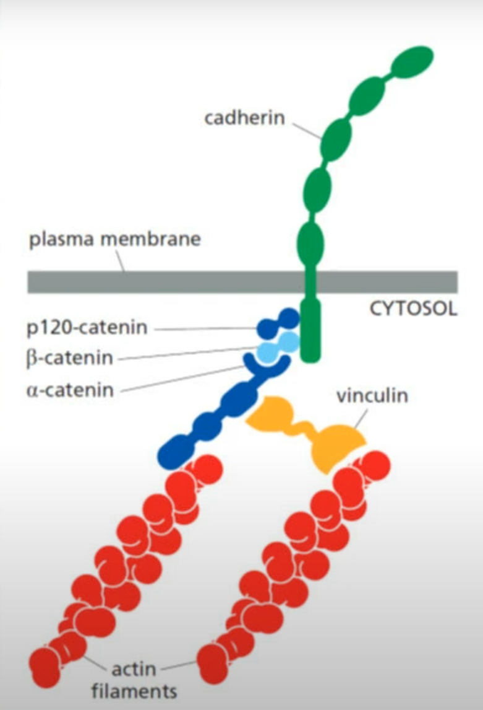
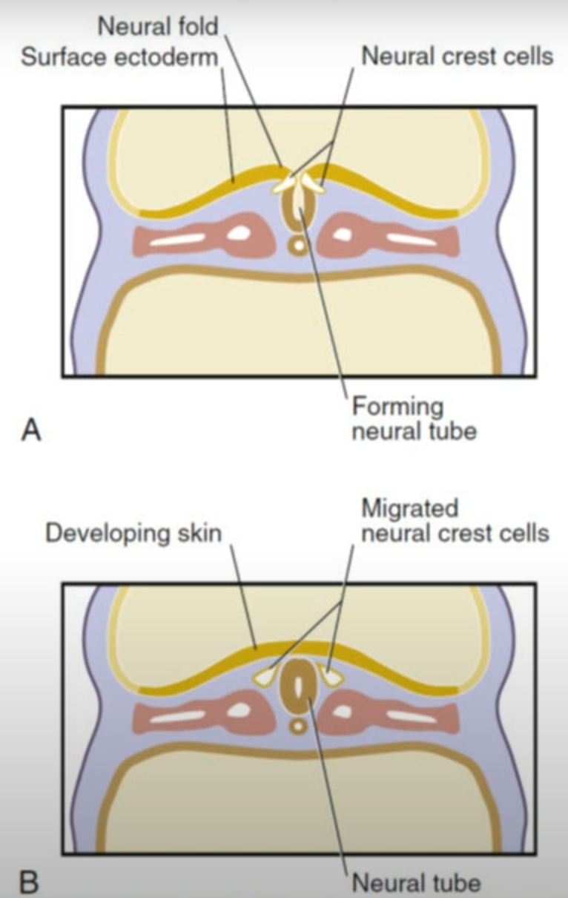
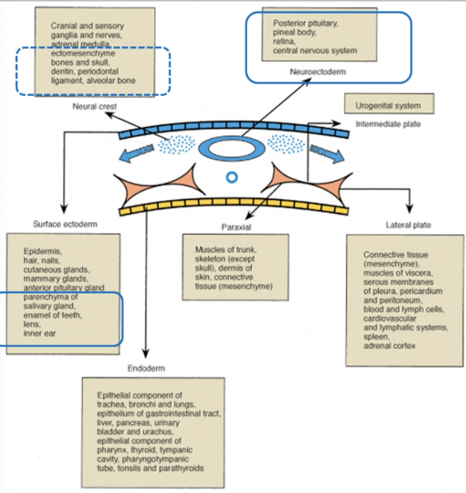
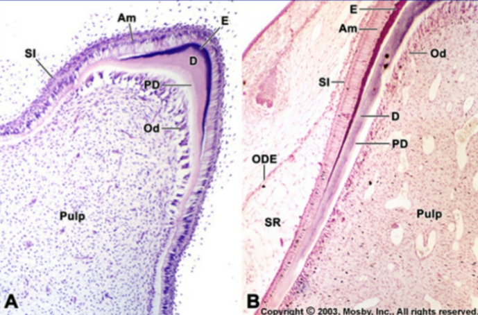
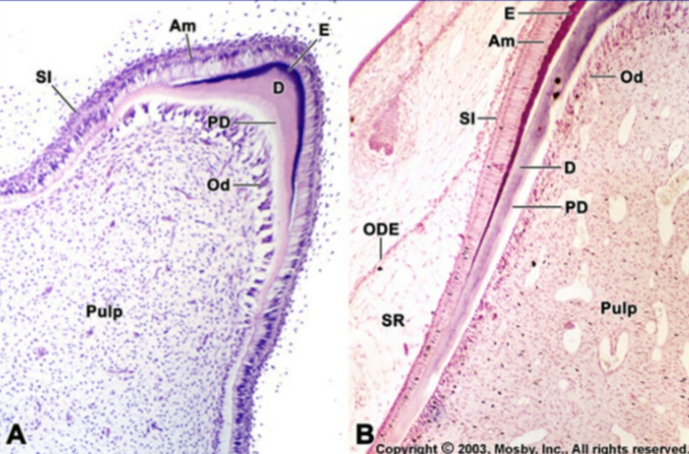
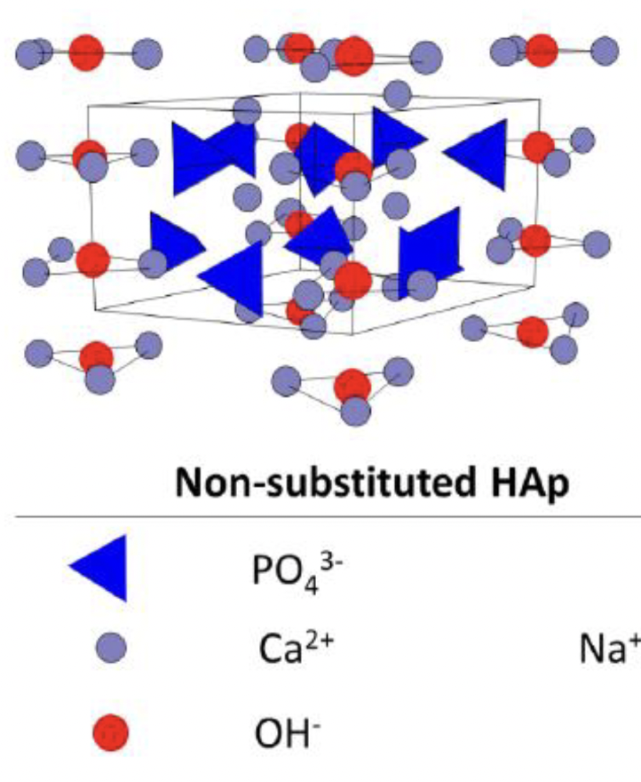
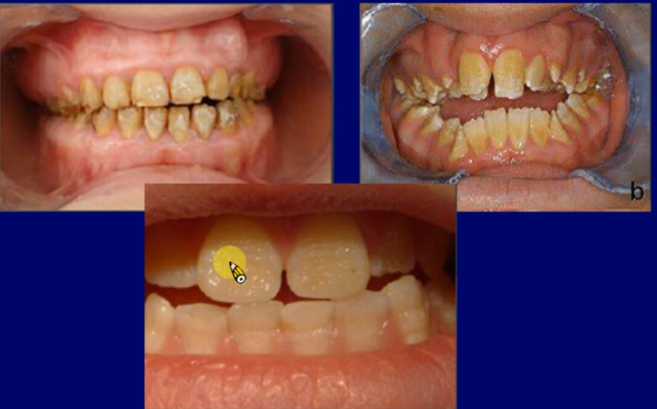
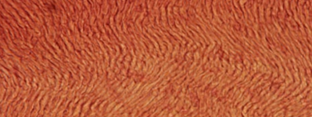
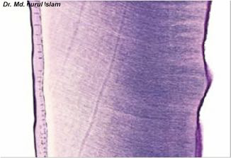

Intro
- Zona pellucida
-

- caption
- 女性分泌刺激精子
Note
精子對側形成dorsal，-catanin調節
- Proliferation
- 增生
胚胎發育

胚胎期(embryonic period)：w2-8
- trophoblast cells
形成胎盤 - embryoblast
- 分化成羊膜腔(amniotic cavity)與卵黃囊(yolk sac)：


原腸化(gastrulation): w3
-
primitive node 折進來變脊索(notochord)
-
中胚層(mesoderm)
內外胚層交界
口腔、肛門
Fold: W4
- 頭摺(head fold)、尾摺(tail fold)、側摺(lateral fold)

分化基因
- BMPs
- bone morphogenetic proteins，腹背軸，刺激表皮，腹部表現。

- Wnt
- wingless，前後軸，頭頸部發育最早
- SHH
- (Sonic hedgehog) 左右分化，決定四肢以及腦脊髓正中線的形成
- cadherins
- 細胞連結，分N,P,E，同性相吸

epithelial—mesenchymal transitions (EMT)
Slug,Snail,and Twist 負責打散epithelial cell形成mesenchymal

分節
- somites
- 軀幹形成肌肉、骨頭、結締組織

- somitomeres(musculature)
- 頭頸部，八對連在一起，僅產生肌肉
- neural crest cells(NCCs)
- EMT打散，分化成頭頸部雜七雜八

主結構
somitomeres
- 八對連在一起，僅產生肌肉
- 1,2 形成顱顏,3-8 形成pharyngeal


- Hox
- somitomeres 3 之後表現
- Dlx family
- 主導上下顎分支

Pharyngeal pounch /groove


- 除了 1st Pharyngeal pouch 形成內耳道，其他都形成腺體
| Pouch | Groove | |
|---|---|---|
| 1 | 內耳道 | 外耳道 |
| 2 | palatine tonsil | 脖子 |
| 3 | thymus g. | |
| inf. parathyroid g. | ||
| 4 | sup. parathyroid g. | |
| 5 | calcitonin-secreting C-cells |
Pharyngeal arch
- 形成軟骨、神經、肌肉、血管
| Arch | 1 | 2 | 3 |
|---|---|---|---|
| cartilage | Meckel’s cartilage | Reichert’s cartilage | hyoid bone lower part, greater horns |
|
|||
| muscular from | 4 | 6 | 7 |
| nerve | CN V | CN VII | CN IX |
| Artery | 上顎 | 舌、鐙骨 | 總頸、內頸 |
| muscular | 咀嚼肌 | 表情肌 | stylopharyngeus m. |
| 備註 | - | Thyroid g. | Carotid body |
| Arch | 4 | 6 |
|---|---|---|
| cartilage | epiglottic, thyroid cartilage | cricoid, arytenoid cartilage |
| muscular from | somites 1,2 | |
| nerve | CN X | |
| Artery |
|
|
| muscular | CN X 支配 | |
Fiber

-
I
- 三股螺旋
-
III
- 胚胎/ repair
-
IV
- Basal laminae
-
VII
- epithelium
- 錨定
-
IX
-
Cartilage
-
X
- Hypertrophic zone (Cartilage)
-
XII
- 韌帶
臉 (1st Pharyngeal arch)
-
24d
- 上下顎分開
-
24-28d
- Med. nasal process 上顎門牙
-
26d
- Frontal prominence

- Frontal prominence
-
27d
- Frontonasal process
- Odontogenic epi. 開始
-
37-38d
- Odontogenic epi.連起來
-
4w
- 舌頭開始發育
-
w5-w6
- 初級上顎的形成
-
內鼻突 → 上頷間結(intermaxillary segment)
-
唇部(上唇人中)、上頷骨部(附 4 顆門齒)、顎部 (形成三角形原顎)
-
- 初級上顎的形成
-
7-8w
- 舌頭下降
- secondary palate 開始長，前往後聚合
-
9w
-
抬頭(upper facial complex has lifted away from the thorax)
-
長下顎
-

Dlx family 是主導上下顎分支的重要基因

舌頭
Secondary palate 形成
- 7-8W開始發育 ， 12W完成
- 由前向後方聚合
- 9W舌頭已經降到Secondary palate下，抬頭將提供向前空間

Arch
- Arch 1 舌尖
- Arch 2,3,4 mesenchyme 舌根
- Arch 4 epiglottis
- occipital somites 舌肌肉
骨頭
-
軟骨內骨化(Endochondral ossification)
- 顱底
- TMJ
-
膜內骨化(Membranous bone)
- 顱頂Cranial vault
- face

Mandible
- 6W 開始形成Meckel’s cartilage
- 向前聚合，間質組織連接
- CN V3一起走
- 7W mental foramen 開始膜內骨化
- 10W Meckel’s cartilage退化成 Incus, Malleus
| condylar | coronoid | chin | angular | |
|---|---|---|---|---|
| 骨化 | 軟骨 | 膜內 | ||
| 發育 時間 |
12w-20w,青春期 | 4m-birth | 一歲 | - |


Meckel’s cartilage
Warning
Mandible 是 Meckel’s cartilage 旁邊的間質組織所形成的膜內骨化產生
Maxilla
- 都是膜內
- Infraorbital foramen 開始膜內骨化
- Sinus 內是空氣: 出生後發育
牙齒
- Primary epithelial band 侵入外胚層間葉組織（ectomesenchyme），形成 Dental, Vestibular lamina
- 除了Enamel來自表皮其餘都是來自ectomesenchyme
- ectomesenchyme決定牙齒形狀
Note
上皮細胞先引導間葉，分化後失去功能，改由間葉調控
Ameloblast & Odontoblast


型態基因
Field model

Clone model
- ectomesenchyme 引導萌發
- zone of the clone 移到哪牙胚長到哪，複製前面的牙
- 實驗:分離要長成第一大臼齒的組織還是能往後依序長出三個臼齒
stage

Bud stage
- 細胞分裂
- Dental lamina 侵入
- Condensation of ectornesenchyme

Cap stage
-
組織分化(histodifferentiation)
-
Dental organ
-
OEE (Outer enamel epi., cuboidal)
-
Stellate reticulum
-
IEE
-
-
dental papilla
-
dental sac (follicle)


Enamel knot
牙齒開始形成位置，變成cusp

Enamel cord
OEE,IEE傳訊?功能不明

Early bell stage
-
形態分化(Morphodifferentiation)
-
Dental lamina 斷開
-
Cervical loop 反折
- 形成牙根開始位置
- 形成牙根開始位置
由上而下
-
星形網狀層(Stellate Reticulum)
-
Stratum intermedium (牙根無)
- Enamel 的形成必須
-
IEE Ameloblast
- 單層柱狀
- 向下生成Enamel
-
Dental papilla Odontoblast
- 向上生成pre dentine
- pre dentine 引導 Ameloblast 生成 Enamel
-
Dental papilla Pulp tissue

Warning
先Dentine 後 Enamel
Late/ Crown/ Advance bell stage
- 開始鈣化
- pre dentine dentine
- stellate reticulum 崩毀
- Odontoblast, IEE 界線分出來，產生root sheath
 


整理圖
Enamel
-
1-2mm
-
96%鈣化
-
無collagen，蛋白質替代:
- amelogenins 在 rod sheath
- enamelins
-
主要礦化結晶：hygroxyapatite Ca10(PO4)6(OH)2
120° 平行四邊形，上下兩層交錯
 -
OH 脆弱，F-取代
結構
- inter rod 在 rod 周圍，組成相同，走向不同
- Rod sheath 卡在R, IR之間
- 裡面主要是 amelogenin


生長
- Ameloblast 細胞間有 tight junction，Odontoblast無
- Distal portion of Tomes’ process 開始長
- 生成時30%鈣化，整個長好再鈣化到96%(3年)


Tomes’ process
- 細胞凸起
- 如果有，enamel整齊
- 分成
- distal portion 分泌 rod
- proximal portion 分泌 inter rod
Presecretory stage
- 細胞分化
morphogenetic phase
- 準備進入bell stage
- 無 Tomes’ process
- IEE 準備形成 Ameloblast
- 分泌amelogenin ，先刺激生成 Dentin 再生成 Enamel

Differentiation phase
- Bell stage，已經分化
Secretory stage
- 緊密 Ameloblast，核偏
- Inner/Outer enamel 的 Tomes’ process沒出現，無Enamel rod & interrod

Maturation stage
- 分泌完成，開始鈣化，約三年
- Ameloblast 亂排
-
Ruffle-ended (80%)
- 分泌 Ca2+
-
Smooth-ended (20%)
- 細胞間疏鬆，送出polypeptide

- 細胞間疏鬆，送出polypeptide
-
Amelogenesis imperfecta
Enamel protein
-
amelogenins
- 主要控制厚度寬度
- 90%
-
Ameloblastin
- 控制長長
-
Enamelin
- 5%
-
Enzymes (打斷 protein)
- MMP20
- KLK4
紋路們
Striae of Retvius
Rods
Perikymata
Striae of Retvius 延伸到表面
Bands of hunter and Schreger
光下深淺斑紋
Cross striation
垂直rod，rod生長時狀態不同導致
Gnarled Enamel
Cusp 亂七八糟 Enamel
Enamel lamellae
有機物渣渣聚集

Enamel tufts
- rods 從 Dentin 到 Enamel 轉向造成
- 由DEJ伸出，短短的不會延長到牙齒表面。
DEJ

Enamel spindles
- Odontoblast 細胞突出
- 常見於cusp tip，比tufts 小很多，需放大倍看。

Dentin
-
70% 礦化

-
生長速度 4μm / day
-
Odontoblast (深色 dentin 淺色 predentin)

- Dental tubules
- Crown 顏色深明顯，接近root 孔洞變大，密度高
Crown

root


分類
- Peritubular/ Intertubular dentin
- Dental tubules 周圍/ 中間

- Primary/ secondary dentin
- 牙根形成前/ 後 dentin (牙根形成需兩年)

- Mantle dentin
- 第一層 predentin 緊鄰 Enamel
- Tertiary dentin
- 不規則，修復性的
Note
根管會越來越小
- Interglobuler
- 礦化不全

- Granular layer of Tomes
- DCJ的黑點們 (protein)
- Incremental Growth Lines
- Enamel, Dentin 年輪們 ，lines of Retzius, Owen
Dentin Sensitivity
Fluid movements in the dentinal tubules
the tubular nature of dentin permits fluid movement to occur within the tubule when a stimulus is applied – a movement registered by pulpal free nerve endings close to the dentin.


Pulp
- Cells
- Odontoblast, Fibroblast, white-blood cells, Undifferentiated mesenchymal cells, Macrophages and Lymphocytes.
- No fat cell
- reticular/ collagen fibres (Type I,III).
- Odontoblast
- 產生 Secondary dentin / Tertiary dentin


構造們
- Pulp stone
-
- True (Denticle): 有Dental tubules，跟 Dentin 分離

- True (Denticle): 有Dental tubules，跟 Dentin 分離
-
- False (Concentric): 無Dental tubules

- False (Concentric): 無Dental tubules
- Diffuse Pulp Calcification
- 根管越來越小
神經
| fiber | Myelination | 位置 | 閾值 | 痛 |
|---|---|---|---|---|
| Aδ | ✓ | PDJ | 低 | 刺 |
| C | ✗ | Pulp core | 高 | 痛爆 |


多根牙
Cementum
Bone + PDL + Cementum + Gingiva = 牙周
- 長到能咬合之前/後: Pre/ functional stage
- type I collagen
- type III collagen
- repair 用的
- type XII
- 韌帶
發育
- Cervical loop → Hertwig’s epithelial root sheath (HERS)
- HERS 刺激 Pulp tissue 轉化成 Odontoblast → Predentin → Dentin
- Dentin 刺激 HERS 斷裂
- Dental follicle 接觸 Predentin 轉化成 Cementoblasts
- HERS
-
殘留在PDL形成 Epithelial cell rests of Malassez (ERMS)
-
發炎形成根尖囊腫 (radicular cyst)
-
少數形成修補用blast

-
alkaline phosphatase
- 鹼性磷酸酶
- 硬組織鈣化必須
RGD motif
- 維持 PDL 不礦化
組織
- Cervical: 50μm，Apical: 200μm
Acellular extrinsic fiber cementum(AEFC)
-
Primary cementum，牙根形成就長
-
第一層 Cementoblast 應該具有 Fibroblast 特徵，去跟Dentin 黏在一起
-
Cementum 大概 15-20μm 開始礦化（有方向性）
-
外層 Cementoblasts 向內分泌 Matrix Protein
-
PDL fiber 伸到 Cementum 裡面
-
越裡面越低(45-60%)
-
上2/3主要固定牙齒
Cellular intrinsic fiber cementum (CIFC)
-
牙根長一半開始長
-
長得快，礦化少
-
下1/3，apical 之間
-
含 Cementoid cell (看不太到)
- repair 用
-
fiber bundles 部分鈣化，固定牙齒 (from PDL)
-
Cementoblast 不活化被Cementum 包，變成Cementocytes
- 毛毛(canaliculi)朝內（root surface）

- 毛毛(canaliculi)朝內（root surface）
Acellular afibrillar cementum (AAC)
- CEJ 附近
- Alveolar crest在CEJ下 1.5-2mm
- 沒固齒能力
Bone
- 上顎薄，下顎臼齒Buccal side 最厚
三個一樣的東西
- Cribriform plate
- Lamina dura
- Bundle bone
-

結構
Haversian system

- Precursors cell
- blast
Periosteum/ Endosteum
- Periosteum 活性高
- Endosteum 有 Osteogenic cell
Osteogenic cell
來自Mesenchymal cell
- osteoprogenitors
- preosteoblasts
- 可以 mitosis
- osteoblasts
- 可以 mitosis
- 不活化稱為 Bone-lining cell
- 被分泌物包起來稱 osteocytes
- osteocytes,
- bone-lining cells
Osteoid
- 未鈣化

Osteoclast
- 有 tartrate-resistant acid phosphatase
- 住在 Howship’s lacunae
- Sealing zone 負責密封


Bone sialoprotein/ Osteopontin
- 在鈣化前緣
- 鈣化結構作為骨架
- Wnt 相關
調控
- VitD, PTH(副甲狀腺素) 低濃度促進骨生成，反之促進骨吸收
- Calcitonin(降鈣素), Estrogen(雌激素) 抑制骨吸收
- Glucocorticoid(醣皮質素) 大部分抑制生成
- FGF23 跟磷消耗相關
- Leptin 抑制骨生成
- 脂肪細胞分泌
- Sclerostine(SOST) 抑制骨生成
- osteocytes 分泌，抑制 Wnt 和 LRP5/6結合
- PTH 抑制
- Calcitonin 促進
- Wnt 促進骨生成，抑制脂肪
-

基因
Runx2
- 決定往硬骨or 軟骨

RANK/ RANKL
- Osteoclast 生成
- Osteoprotogerin 結合 RANKL 抑制
生長

軟骨內骨化
- 有方向性，Longitudinal septa 被留下來

膜內骨化
- Woven bone
- 未成熟
- Noncollagen portein 多
Remodeling
- 先 clast ，再 blast 回來
-
有 Cement/ reversal line (反轉線)
-
Collagen 少， Calcium-to-phosphorus 高
-
- Blast 填滿變成 Filling cone
Rest line v.s. reversal line
- osteocytes 決定
- 成人
- Cortical bone 5% per year
- Trabecular bone 15% per year
Periodontal Ligament(PDL)
- 0.15mm-0.38mm 中1/3最窄
- 用進廢退
- 年紀越大越窄

結構
- Attach gingiva 貼在骨頭上不能動
- frenum insertion
- 繫帶過長
Matrix Gla protein(MGP)
阻止 PDL 鈣化
Cells
- Fibroblast：
- principal cells
- 發炎破壞周圍組織
- Epithelial Cells
- HERS/ ERMs
- Undifferentiated Mesenchymal Cells
- Stem Cells
- Bone and Cementum Cells
Fiber
Collagen fiber
-
Collagen fiber III
- Repair self, cementum, bone
-
Collagen fiber I
- Sharpey’s fiber
- 往內往外，僅 AEFC 完全鈣化
-
Collagen fiber XII
-
5 Group, Oblique 多

-
另外 5 Group
Elastic fiber
- Oxytalan fibers
- vertically from the cementum surface
- 調節血流，Cervical third 多
Artery
- 下顎、後牙、Cervical third 多
Nerve
- 副交感相關
Shedding and Eruption of tooth
- Natal tooth
- 出生就有牙
- Crowing
- 擁擠，Mandibula 長不夠
-
Dental follicle 引導萌發，牙胚卻不影響
-
先 Lingual 再往牙根之間


萌發順序
- crown completed time of emergence root completed

Gubernacular cord
Dental lamina 殘餘
Oral Mucosa
- Fordyce’s granules
-
- 皮脂腺
- 在lamina propria
- 神經、血管、腺體都在Submucosa
- Waldeyer’s ring
- 淋巴（上皮往內凹）
- Epithelial Proliferation
-
- 唯一能分裂
-
- basal lamina 上2-3層
-
- 52-75天一輪、牙齦52-75天
分類
Masticatory mucosa
- 20%
- 上皮角化
- 缺Submucosa
Lining mucosa
- 65%
- 舌背、牙齦、硬顎以外
Specialized mucosa
- 15%
- 舌背味蕾
分層

- A: Orthokeratinization in human gingiva
- B: Parakeratinization in human gingiva
- 角化不全，正常
- C: Nonkeratinization in primate buccal epithelium
Basal cell
- 立方形
- 分化最少
- Lamina lucida，透明層
- Lamina densa，緻密層
- Lamina fibroreticularis，網狀纖維板或Sublamina densa，副緻密層
Prickle cell
- Desmosome
- 最多層
包膜顆粒
糖脂質
Granular layer
- 2-3層
- 大量角化透明顆粒
Note
Keratinized layer
cytokeratin, CK
- 不同的上皮細胞有不同種類的CK，就算同種細胞，不同的層次表現的CK也不盡相同
Clear cell

型態
嘴唇
- 上皮內側後
- Vermillon zone(唇紅區), Intermediate zone 有角質化，無附屬構造
Vermillon zone
- 真皮乳突，微血管環

Mucogingival junction
- 角化→非角化
- Lamina propria 從膠原纖維（連骨頭），到 Elastic fiber

Dentogingival junction
-
Free gingiva
-
Attached/gingiva
-
Junctional epithelium
- 往牙根變薄
-
Interdental papilla
-
gingiva sulcus
- 0.5~0.3mm
-
gingiva crevicular fluid
- 還補體、抗體、免疫球
| Junctional | gingiva | |
|---|---|---|
| RER/高基 | 高 | 低 |
| 張力絲 | 低 | 高 |
| Desmosome | 低 | 高 |


Epithelial Attachment
- 連Basal lamina 與牙齒
- 缺 collagen IV, anchoring fiber
- 利用 Hemidesmosome
Free gingiva groove (FGG)

gingiva stippling
- 牙齦點班
- 抗磨耗
- 男性深
Col
後牙 papilla 之間，無角化

Hard palate
- Palatine raphe
- 無 缺Submucosa

Soft palate
- 非角化
- Submucosa 多黏液腺
Tongue

Lingual Papilla
-
Filiform
- 缺B12或貧血患者缺乏

- 缺B12或貧血患者缺乏
-
Fungiform Papilla
- Filiform 之間

- Filiform 之間
-
Foliate papilla
- 舌後方測緣
- 黑箭頭是味蕾

-
Circumvallate papilla
- 50% of all taste buds
- 角化上皮覆蓋
- 味蕾在兩側
- 深溝
- Von Ebner’s glands

Von Ebner’s glands
純漿液腺
Taste bud
-
Type I (60%)：dark cell
- 最常見
- 終止於微絨毛 (microvilli)，有約30 ~ 40個纖細的突起 (processes)
- 會伸出味蕾孔外細胞質內包含很多囊泡
-
Type II (30%)：light cell
- 看起來比較亮，細胞也比較大
- 細胞較短，微絨毛較少
-
Type III (7%)：intermediate cell
- 型態近似Type II
- 無微絨毛，有比較鈍且圓的頂端
- 終止於味蕾孔外
-
Type IV (3%)：basal cell
- 為基底細胞，位在味蕾基底部
軟顎、會厭都有味蕾
foramen cecum
- 甲狀腺在舌頭上發育留下來的痕跡，
- 甲狀腺後沿著甲狀舌管 (thyroglossal duct)到現在的位置
- 若未消失會與甲狀舌管連在一起，形成甲狀舌管囊腫 (thyroglossal duct cyst)
Lingual tonsil
- 舌後1/3的淋巴組織，許多舌濾泡組成
- 每個濾泡含一個或一個以上的淋巴小結，可含生發中心
- 與腭扁桃體和咽扁桃體一起構成口咽部的淋巴環
Aging
- 因為唾液腺退化，被脂肪組織或纖維組織取代，而無法分泌唾液，口腔黏膜較平滑、乾燥
- 上皮萎縮且變得更脆弱，因此對特定物質變得更為敏感、易受傷
- 上皮變得更薄，上皮和結締組織的接觸面變平
- 絲狀乳突數量減少，葉狀乳突可增生，此時飲食中如缺乏維生素B等營養成分，則上述變化更明顯
- 固有層中細胞會減少而膠原蛋白和纖維增加
- 主要的唾液腺都會大量萎縮，被脂肪、纖維所取代。黏膜各處的小唾液腺發生明顯萎縮，被增生的纖維組織取代。所以在老年患者中，特別是停經後的女性往往出現口乾、黏膜燒灼感及味覺異常等
- 嘴唇和頰側皮脂腺會增加
- 神經末梢的密度降低，味蕾數量減少，黏膜感覺功能下降
- 老人容易口乾、敏感，但除了口腔黏膜變薄及唾液分泌減少，並無特別病變
- 口腔靜脈曲張 (varicosities) (下圖)：主要發生在老年人舌腹
比較
更新週期

唾腺
- 結石：大約有80-92％唾液腺結石是發生在「頜下腺」，發生在「腮腺」的結石則大約為6-20％，而從「舌下線」或小唾液腺則很少發生唾液腺結石
TMJ
演化
- 兩生(A),爬蟲(B)由Meckel’s cartilage 終末端和顎方骨(palatoquadrate bar)形成關節
- 哺乳類(C,D)開始有 coronoid process
- Meckel’s cartilage 形成 incudomalleolar joint
發育
-
初級顳顎關節存在時間為四個月左右,
-
第三個月次級顳顎關節形成
-
A為12 周胎兒的發育圖,
-
紅色圈圈為 temporal blastema(顳骨始基)
- 出現較早、骨化較早
-
綠色圈圈為 condylar blastema(髁突始基)
-
-
B: 下關節腔較上關節腔早形成